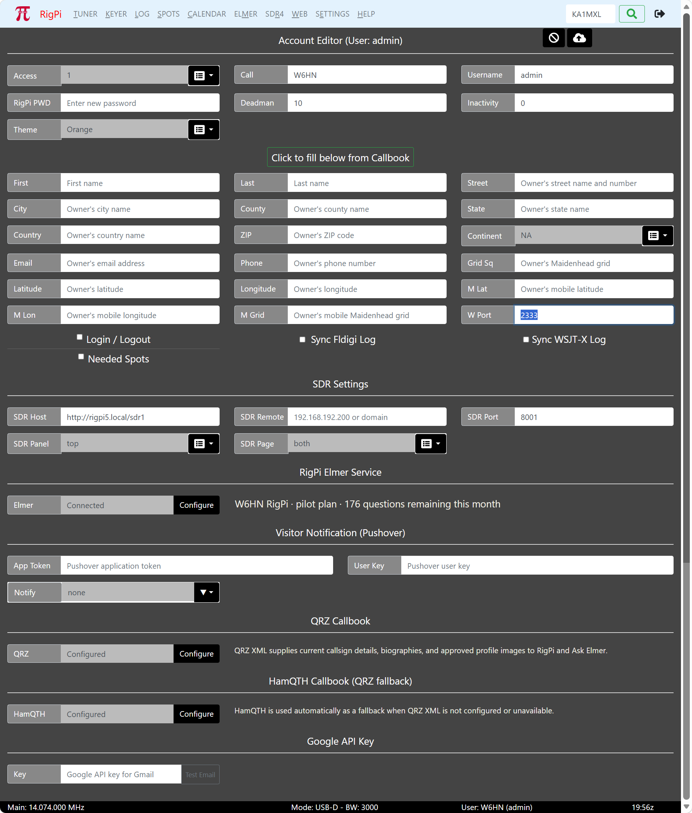

|
<< Click to Display Table of Contents >> |
The Account Settings window shows a list of all RSS accounts. When you start RSS the first time, a single account named admin with callsign ADMIN is the only account in the User list. Open the Account window from the SETTING Menu.
Personalizing the ADMIN Account

The ADMIN account cannot be deleted, but it can be reassigned. You must edit the ADMIN account to make it your own. Click the green Edit button on the right end of the ADMIN line to open the Account Editor. Three fields are critical and should be changed: Call, Username, and password.
Call |
Enter your callsign, replacing ADMIN. Your own call must be entered to connect to spot clusters. |
Username |
Use any Username you wish. Usernames must be unique and are used to identify accounts. The Username is not case sensitive and there are no length restrictions except it must be at least one character.
This Username is used when logging in to RigPi, both in the 'normal' RigPi mode (http://rigpi5.local) and RigPi Lite mode (http://rigpi5.local/lite).
|
RigPi PWD |
Passwords are optional. If you will be opening RSS to the Internet to operate remote, a password is essential. The password for ADMIN is blank so you can easily sign in the first time without a password. Once you enter a password you will be required to use that (or a modified) password from then on.
This password is used when logging in to RigPi, both in the 'normal' RigPi mode (http://rigpi5.local) and RigPi Lite mode (http://rigpi5.local/lite). |
Other optional special fields:
Access |
ADMIN has an access level of 1. The first account must be an Admin account.
All RSS settings can be accessed through an account with the Access set to 1 for that account. If you have set up a level that does not provide access to settings, temporarily set that account to Admin so you can make changes.
If the Access is set to 2, the account does not have access to Account or System settings.
Access 3 blocks all settings.
Access 4 prevents the account from transmitting.
Access 10 provides only a PTT button.
A guest account can be set up with any Access level from 1 to 10.
When you save the account info, if you have changed the access level, RigPi asks if you want to reboot. It is important to proceed with the reboot. |
Latitude/Longitude |
Callsign lookup uses your latitude and longitude to compute the distance to a DX station. Longitudes west of 0 are negative numbers. Latitudes south of the Equator are negative numbers. |
Sync WSJTX Log |
Contacts logged in WSJT-X are automatically transferred to the selected log for this account. See the WSJT-X Help topic for details. |
Sync Fldigi Log |
Contacts logged in Fldigi are automatically transferred to the selected log for this account. See the Fldigi Help topic for details. |
Deadman |
Limits transmit time to the number of minutes entered in the text box. This prevents unwanted transmitting if remote control is lost while in transmit. Set Deadman to 0 to override this function. If transmit is blocked, reconnect the radio to reset the Deadman timer. |
Inactivity |
Number of seconds for radio inactivity before automatically closing RigPi. Enter 0 to bypass this function. If you are using a mobile device that takes over the screen with another app (such as VNC), set the Inactivity value to 0. |
Theme |
Select the Theme for the Tuner window. Four themes are provided: Orange, Night, LCD, and High Contrast. Note: since this box can only be filled from the drop down list it has a gray background. |
QRZ User |
If you wish to use the QRZ XML subscription service to look up calls, you must enter your QRZ username and QRZ password. QRZ XML is a subscription service. If you do not have a QRZ account, RSS uses the FCC database in RSS to look up info for US callsigns, and an RSS entity database to find information about non-US callsigns. |
QRZ Password |
Password for QRZ XML service. |
See trhe External Accounts topic for connections to external resources.
The remainder of the Account fields are self-explanatory and are optional.
Click the cancel (Stop icon) to reset any changes you have made. Click save (cloud up-arrow button) to save the changes.